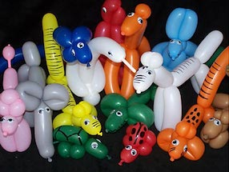

В настоящее время латексные воздушные шары стали привычным предметом – в виде игрушки, популярного праздничного украшения или материала для воплощения в жизнь безумных идей, например - полетов на большой высоте. В настоящее время латексные воздушные шары стали привычным предметом – в виде игрушки, популярного праздничного украшения или материала для воплощения в жизнь безумных идей, например - полетов на большой высоте. Предмет, который стал нам всем так привычен, известен издревле и прошел к своему современному виду и значению длинный путь сквозь века.
Материал, из которого производят современные воздушные шарики, пользующие наибольшей популярностью – латекс. Исходное вещество для его получения – это млечный сок тропических деревьев, произрастающих в Бразилии, Мексике, Малайзии. Наибольшее значение для промышленности имеет латекс, получаемый из сока бразильской гевеи. Каучук – это следующее производное древесного сока цвета молока. Сегодня вулканизированный каучук – это всем известная резина, используемая для производства самых разных предметов быта. Стоит сказать, что в настоящее время искусственно получаемый каучук почти постепенно вытесняет натуральный.
А что же касается воздушных шаров? Ученый, которого можно считать первооткрывателем воздушного шарика – это английский физик и химик Майкл Фарадей. В 1824 году в Королевском Учреждении в Лондоне в ходе экспериментов с водородом Фарадей пришел к открытию нового – будущего воздушного шара. «Каучук – чрезвычайно эластичен» - высказывался ученый в статье, опубликованной в журнале «Quarterly Journal of Science», - «Мешки, сделанные из него… При наполнении газом становились прозрачными и приобретали подъемную силу…» Конечно, воздушные шарики были известны еще в древности, например, в исчезнувшей ныне культуре ацтеков. Но научное обоснование придало открытие совсем другое значение.
Первоначально вид воздушных шаров отнюдь не соответствовал тому, как выглядят современные красивые воздушные шары – два сложенных друг на друга каучуковых листа с насыпанной в середине мукой – это нужно было для того чтобы листы склеивались не по всей площади, а только по краю.
В 1825 году англичанин Томас Ханкок наладил выпуск новой необычной игрушки, многим пришедшейся по душе – шарика, состоящего из комплекта, в который входили бутылочка с жидкой резиной и шприц. Задача состояла в том, чтобы самостоятельно выдуть шарик.
В 1847 году Д.Г. Инграм открыл вулканизированные воздушные шары, которые в отличие от предшественников не слипались. Это открытие играет огромную роль, ведь именно вулканизированные шары считаются первыми воздушными шарами в том виде, в котором мы привыкли видеть их сегодня.
1889 год – начало продажи воздушных шаров в Соединенных Штатах Америки. Тогда их цена равнялась четырем центам за один шар или сорок центов за дюжину. При этом в США воздушные шары не производились, а привозились в страну, предположительно из Бельгии. Собственное производство воздушных шаров началось лишь в 1907 году фирмой «Компания Каучука» Андерсона в Акроне (штат Огайо). Но компания умудрилась вскоре стать новатором – в 1912 году был выпущен не круглый шарик, а вытянутый.
В 1922 году произошел взрыв водорода, что привело к выходу запрета в Нью-Йорке на заполнение водородом воздушных шаров. Вот таким, не совсем научным способом мы и пришли к тому, чтобы заполнять воздушные шары гелием.
Что касается непосредственно даты рождения современного воздушного шара, то нет причин не согласится с утверждением, что это произошло в 1931 году, когда Нейл Тайллотсон наладил выпуск шаров из сока каучуковых деревьев. Позже предприимчивый делец организует целую Резиновую компанию Tillotson., продолжающую свою работу и сегодня.
После окончания Великой Отечественной войны японцы стали выпускать тонкие воздушные шары и импортировать их в США. Тонкие шарики отлично подходили для моделирования, но из-за невысокого качества используемого каучука шарики лопались и чтобы создать из них что-то толковое, нужно было обладать мастерством в этом деле. И только к концу 50-х г.г. наладился выпуск качественных моделирующих шаров, которые используются и сегодня.
| Каталог воздушных шаров | |||
|---|---|---|---|
| Название | Цена | Описание | Фотография |
| Классические | 100р. | Они знакомы многим поколениям детишек, успевшим повзрослеть и обзавестись собственными чадами. Выпускают их из латекса – особого состава на основе натурального каучука. Благодаря современным технологиям, нам доступны широкая цветовая гамма и различные размеры – большие воздушные шары, гигантские. маленькие. | |
| Фольгированные или миларовые | 300р. | Изготовлены путем сплавления слоев полиэтилена и нанесения металлизированного напыления по всех поверхности. Они обладают особой прочностью и никогда не взрываются. За счет блестящей поверхности, широкому выбору, модели из фольги всегда пользуются популярностью. К торжественному поводу вы сможете выбрать их в виде шаров цифр, букв, фигурок людей и животных, различных геометрических форм, с изображениями мультгероев и персонажей фильмов, поздравительными надписями. | |
| Ходячие шары (ходячки) | Особая разновидность фольгированных моделей. Они выполнены в виде большой фигуры популярного героя мультика, супергероя. За счет небольшого грузика, расположенного в определенных местах, фигурка движется под дуновением ветерка и «шагает», вызывая восторг окружающих. На открытых площадках, где есть свободный приток воздуха, достигается наибольший эффект от такой игрушки. | ||
| Гелиевые шары | 200р. | Любые из перечисленных видов, наполненные гелием. За счет летучести вещества, они способны парить под потолком или на открытом воздухе. Из них получаются самые фантастические украшения из воздушных шаров. Использовать газ можно в любое время года, но при существенном понижении температуры воздуха, нужно проконсультироваться с аэродизайнерами. | |
| ШДМ (шары для моделирования) | 80р. | Длинные «колбаски», из которых аниматоры и клоуны создают необыкновенные фигурки человечков и животных, шляпы, сабли, цветы, целые панно и большие декорации. Чтобы надуть их, одной силы легких будет недостаточно и нужно обязательно приобрести насос. |  |
| Шар с сюрпризом | 1000р. | Поражает воображение своим внешним видом! Сфера с большим горлышком служит своеобразной упаковкой для подарка. Если вы хотите удивить своим презентом, то упакуйте мягкую игрушку, дорогой парфюм, ювелирные украшения, живые цветы или бутылочку коллекционного алкоголя в такой прозрачный воздушный шарик. | |
| Линколуны | 150р. | это модели с двумя хвостиками. Посредством них можно создать украшения для любого торжества, которое отмечается в кругу семьи или в масштабах города. | |